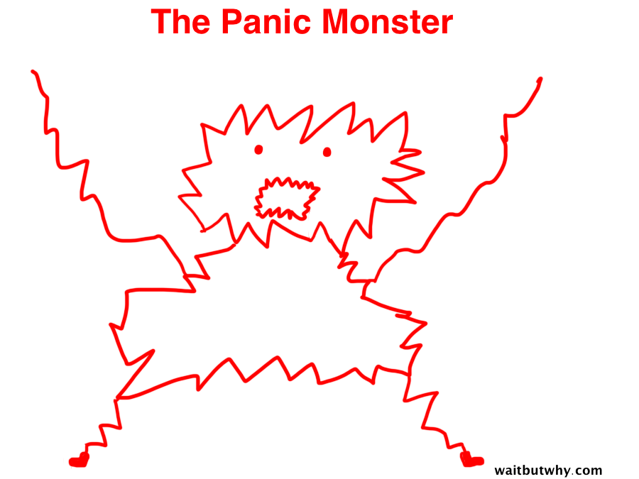

Pictures!
For the longest while now I wanted to add picture support to this site. But I was procrastinating like a champ.
Today was an extremely slow day at work today, so I used the time to call a friend I haven't talked to in quite a while. I told him how bored I was and that I don't know what to do. He said - "Why not finally add Pictures to your site?"
So I said why not? And I started working on it, honestly I really enjoyed it! I should start doing these kind of stuff more, instead of letting time pass me by and procrastinating.
So thanks Oren for being my panic monster for today!

Also I want to add pictures for previous blogs, to add more life to it, but maybe on another day ;)